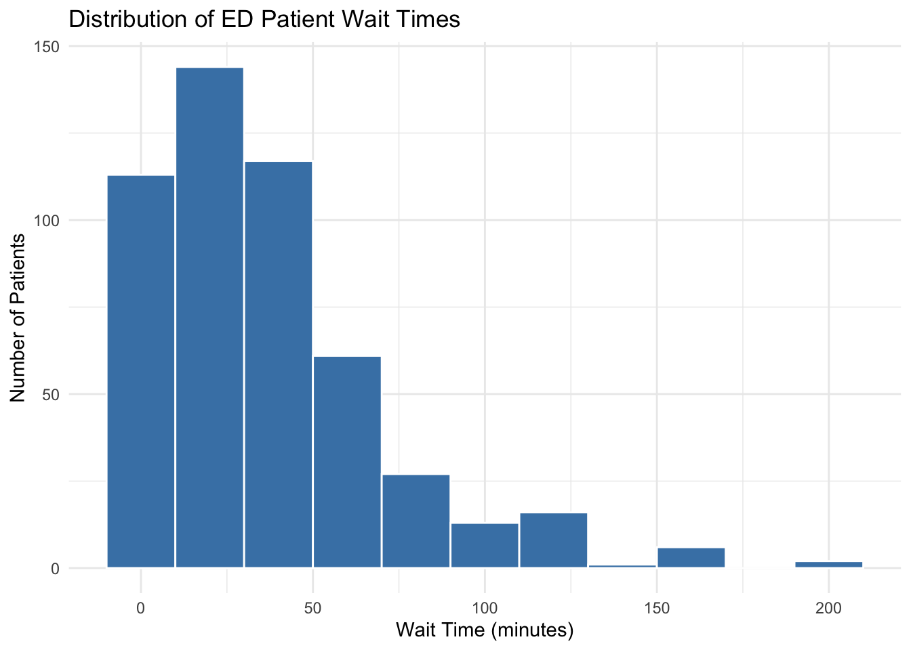
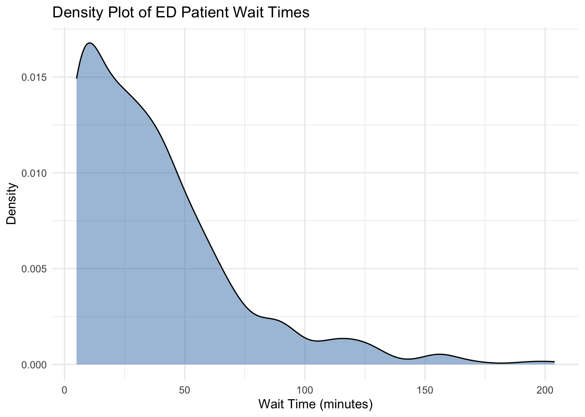
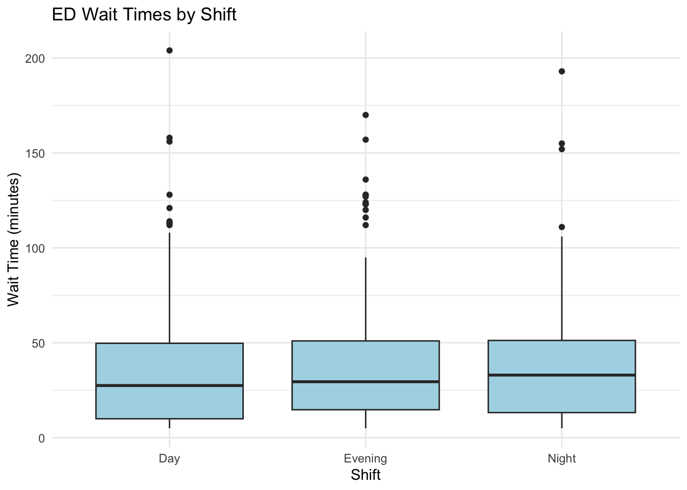
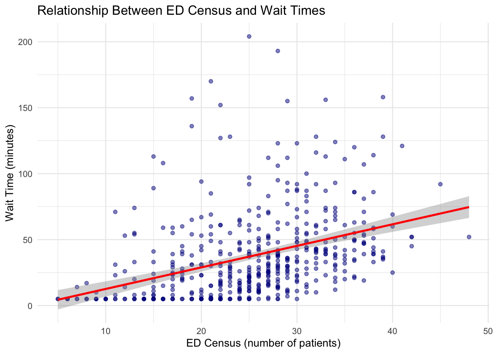
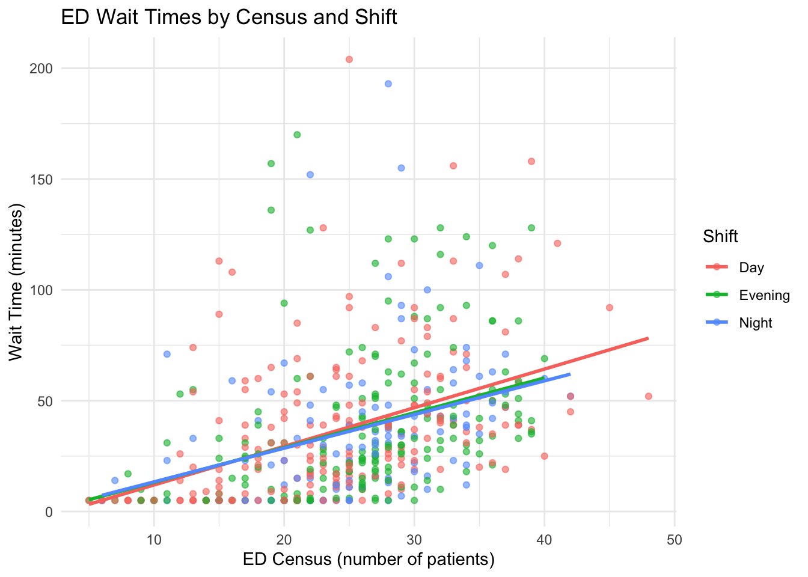
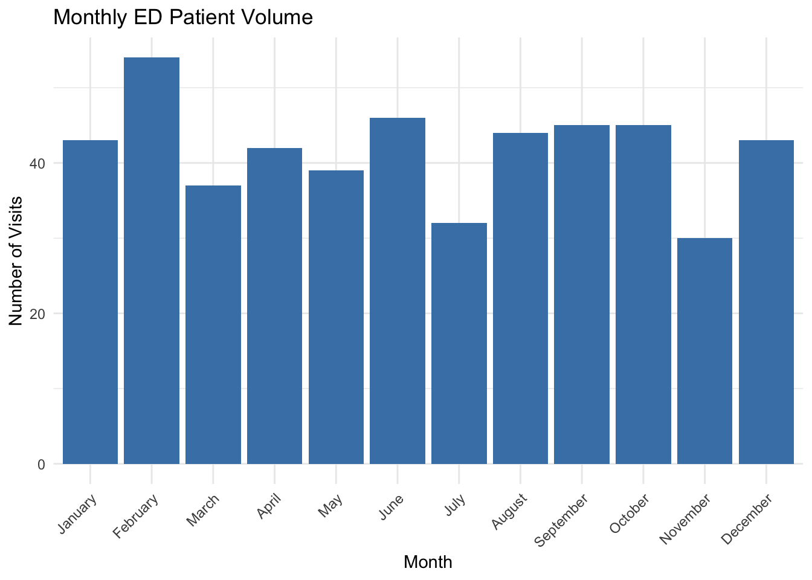
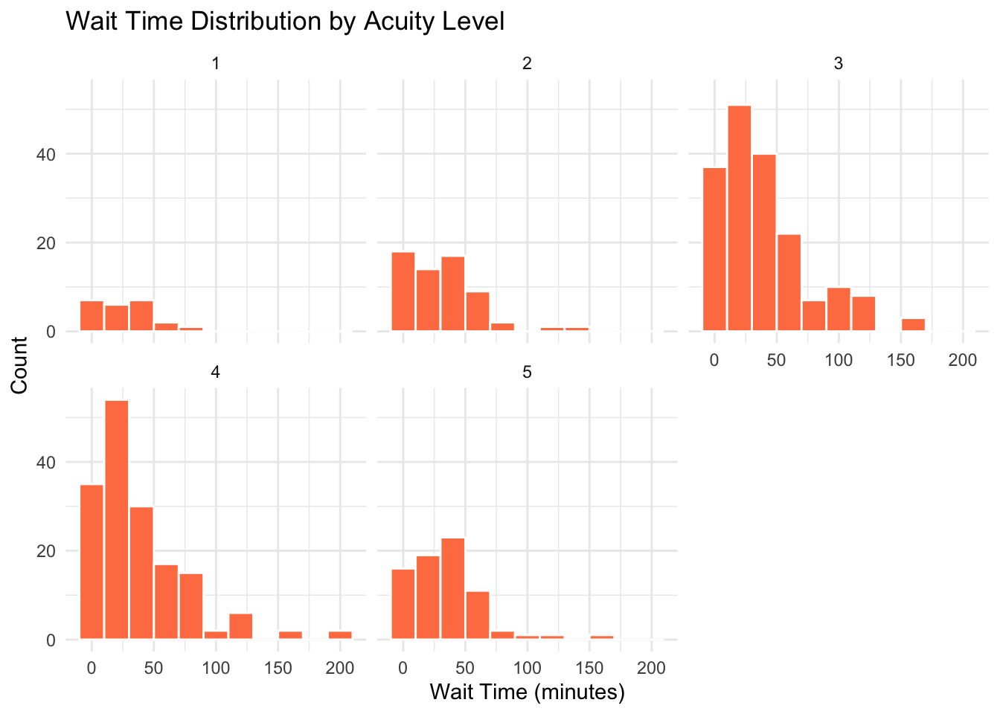

# Step 1: Initialize the plot with data and aesthetic mappings
ggplot(data = ___, mapping = aes(x = ___, y = ___)) +
# data: specify your data frame (e.g., ed_data)
# mapping: define how variables map to visual properties
# aes(): aesthetic function that links data columns to plot elements
# - x: variable for the horizontal axis
# - y: variable for the vertical axis (optional for some geoms)
# Step 2: Add a geometric layer to visualize the data
geom___() +
# Choose the appropriate geom based on your visualization goal (see below):
# Step 3: Add labels to make the plot informative
labs(title = "___", x = "___", y = "___") +
# title: descriptive title explaining what the plot shows
# x: label for x-axis (include units, e.g., "Wait Time (minutes)")
# y: label for y-axis (include units, e.g., "Number of Patients")
# Step 4: Apply a theme to control overall appearance
theme___()
# Choose a theme for professional appearance:
# - theme_minimal(): clean, minimal design (recommended)
# - theme_classic(): traditional look with axis lines
# - theme_bw(): black and white theme
# - theme_light(): light background with subtle gridlinesData Visualization (Practice Activities)
Business Analytics in Healthcare Management
1 Overview
In this practice session, you will apply the data visualization techniques learned in the lecture. This is a learning activity designed to help you gain a better understanding of how to visualize data using the ggplot2 package.
What you’ll practice:
- Histograms and density plots for distributions
- Bar charts for categorical data
- Box plots for comparing groups
- Scatterplots for relationships
- Faceting for small groups or categories
- Color grouping and customization
Dataset: Emergency Department (ED) Performance Metrics
Format: Fill-in-the-blank code sections (marked with ___)
About the dataset:
- You will be working with simulated Emergency Department (ED) Performance Metrics data. This dataset reflects routine measurements collected by hospitals to monitor their ED efficiency and care quality.
- Typical variables include average patient wait times, door-to-doctor times, total ED visits, admission rates, and patient satisfaction scores, among others.
- The data may also include categories such as hospital, week, and patient demographics (e.g., age group, gender).
- All data are anonymized and serve as realistic practice for healthcare analytics.
Instructions:
- Complete the code by replacing
___with appropriate values - Run each chunk to verify your visualizations
- Answer the interpretation questions
- Compare your results with classmates or solutions
Note: This practice is completion-based. The goal is to learn and experiment—mistakes are part of the process!
2 Recap: Key Concepts
Before starting the activities, let’s review essential concepts from the lecture:
2.1 Grammar of Graphics
ggplot2 visualizations are built in layers:
2.2 Common Geoms
- geom_histogram(): Distribution of a continuous variable
- geom_bar(): Counts of categorical variable
- geom_boxplot(): Distribution with quartiles
- geom_point(): Scatterplot for relationships
- geom_smooth(): Add trend lines
- geom_violin(): Distribution shape
2.3 Data Structure
- Wide format: One row per subject, multiple columns for measurements
- Long format: One row per observation, useful for grouping and faceting
# Convert wide to long
long_data <- wide_data %>%
pivot_longer(cols = c(___), # columns to pivot from wide to long format
names_to = "___", # name of new column to store old column names
values_to = "___") # name of new column to store the values3 Common Errors and How to Fix Them
You WILL encounter errors while practicing—that’s completely normal and part of the learning process! Here are the most common errors and their solutions:
3.1 Error 1: “object not found”
Error: object 'ed_data' not foundCause: You didn’t run the chunk that creates the dataset
Fix:
- Scroll up to the “Dataset Generation” section
- Click the green “play” button to run that chunk
- Then try your code again
3.2 Error 2: “could not find function”
Error: could not find function "ggplot"Cause: The ggplot2 package isn’t loaded
Fix:
- Scroll to the very top of the file
- Run the
setupchunk (withlibrary(ggplot2)) - If that doesn’t work, install the package:
install.packages("ggplot2")
3.3 Error 3: “mapping must be created by aes()”
Cause: You forgot to put variables inside aes()
# ❌ Wrong:
ggplot(data = ed_data, x = wait_time_minutes)
# ✅ Right:
ggplot(data = ed_data, aes(x = wait_time_minutes))Fix: Wrap your variable mappings in aes()
3.4 Error 4: “unexpected symbol” or “+” at end of line
Cause: You added a + after the last line of your ggplot code
# ❌ Wrong:
ggplot(ed_data, aes(x = age)) +
geom_histogram() +
theme_minimal() + # ← Extra + causes error
# ✅ Right:
ggplot(ed_data, aes(x = age)) +
geom_histogram() +
theme_minimal() # ← No + on the last lineFix: Remove the + from the last line
3.5 Error 5: “object of type ‘closure’ is not subsettable”
Cause: You wrote aes instead of aes()—missing the parentheses
# ❌ Wrong:
ggplot(ed_data, mapping = aes) # Missing ()
# ✅ Right:
ggplot(ed_data, mapping = aes(x = age))Fix: Always include () after function names like aes()
3.6 Error 6: Variable name typos
Cause: R is case-sensitive! Variable names must match exactly
# ❌ Wrong:
aes(x = Wait_Time_Minutes) # Capital letters
# ✅ Right:
aes(x = wait_time_minutes) # Matches the actual column nameFix: Use names(ed_data) or str(ed_data) to check exact variable names
3.7 Error 7: “Computation failed” in geom_smooth()
Warning: Computation failed in `stat_smooth()`Cause: Usually too few data points or inappropriate method for your data
Fix:
- Make sure you have enough data points
- Try
method = "loess"instead ofmethod = "lm" - Check that both x and y are numeric variables
3.8 Still Stuck?
If you’re still getting errors:
- Check spelling: Variable names are case-sensitive
- Run all previous chunks: Make sure all setup code has been executed
- Restart R: Session → Restart R, then run chunks from top to bottom
- Read the error message carefully: It often tells you exactly what’s wrong
- Compare with examples: Look at the lecture file or solutions for similar code
TipPro Tip: Debugging Strategy
When you get an error:
- Don’t panic! Errors are learning opportunities
- Read the error message - what line is it pointing to?
- Check the basics - Did you run all previous chunks? Are variable names spelled correctly?
- Simplify - Comment out parts of your code to find which line causes the error
- Search - Copy the error message into Google (many others have had the same error!)
4 Activity: Emergency Department Performance Metrics
4.1 Scenario
You are analyzing performance metrics from an emergency department (ED) over the past year. The hospital administrator wants to understand:
- Distribution of patient wait times
- Differences in wait times across shift times
- Relationship between ED census (# of patients; crowdedness) and wait times
- Monthly trends in patient volume
4.2 Dataset Generation
Run this code to generate the ED performance dataset:
# Generate ED performance data
ed_data <- data.frame(
visit_id = 1:500,
month = sample(month.name, 500, replace = TRUE),
shift = sample(c("Day", "Evening", "Night"), 500,
replace = TRUE, prob = c(0.45, 0.35, 0.20)),
wait_time_minutes = round(rlnorm(500, meanlog = 3.2, sdlog = 0.8)),
ed_census = round(rnorm(500, mean = 25, sd = 8)),
acuity_level = sample(1:5, 500, replace = TRUE,
prob = c(0.05, 0.15, 0.35, 0.30, 0.15)),
length_of_stay_hours = round(rlnorm(500, meanlog = 1.5, sdlog = 0.7), 1)
) %>%
mutate(
wait_time_minutes = pmax(5, pmin(wait_time_minutes, 300)),
ed_census = pmax(5, pmin(ed_census, 50)),
month = factor(month, levels = month.name)
)
# Add simulated correlation: higher census = longer wait
ed_data <- ed_data %>%
mutate(wait_time_minutes = wait_time_minutes + (ed_census - 25) * 2 +
rnorm(500, 0, 10),
wait_time_minutes = pmax(5, round(wait_time_minutes)))
# View first few rows
head(ed_data) visit_id month shift wait_time_minutes ed_census acuity_level
1 1 September Evening 39 28 3
2 2 January Day 20 35 4
3 3 June Evening 15 17 3
4 4 November Evening 24 31 1
5 5 December Night 5 22 2
6 6 April Evening 33 38 4
length_of_stay_hours
1 2.3
2 2.2
3 4.0
4 1.7
5 9.2
6 5.34.3 Dataset Variables
This dataset contains 500 simulated emergency department visits with the following variables:
| Variable | Type | Description | Range/Values |
|---|---|---|---|
| visit_id | Numeric | Unique identifier for each ED visit | 1 to 500 |
| month | Factor | Month when the visit occurred | January through December |
| shift | Character | Time of day when patient arrived | “Day”, “Evening”, “Night” |
| wait_time_minutes | Numeric | Time from arrival to seeing a provider (minutes) | 5 to 300 minutes |
| ed_census | Numeric | Number of patients in ED at time of visit (crowdedness) | 5 to 50 patients |
| acuity_level | Numeric | Patient severity level (1=most critical, 5=least critical) | 1, 2, 3, 4, 5 |
| length_of_stay_hours | Numeric | Total time spent in ED from arrival to discharge (hours) | Varies (positive values) |
Key relationships in the data:
- Higher ED census (more crowded) tends to result in longer wait times
- The dataset simulates realistic patterns seen in emergency departments
- Shift distribution: Day (45%), Evening (35%), Night (20%)
4.4 Examine the Dataset
# Check structure
str(ed_data)'data.frame': 500 obs. of 7 variables:
$ visit_id : int 1 2 3 4 5 6 7 8 9 10 ...
$ month : Factor w/ 12 levels "January","February",..: 9 1 6 11 12 4 5 12 10 2 ...
$ shift : chr "Evening" "Day" "Evening" "Evening" ...
$ wait_time_minutes : num 39 20 15 24 5 33 5 8 58 32 ...
$ ed_census : num 28 35 17 31 22 38 24 11 38 32 ...
$ acuity_level : int 3 4 3 1 2 4 5 3 1 4 ...
$ length_of_stay_hours: num 2.3 2.2 4 1.7 9.2 5.3 12.7 3.4 4.7 2.4 ...# Summary statistics
summary(ed_data) visit_id month shift wait_time_minutes
Min. : 1.0 February : 54 Length:500 Min. : 5.00
1st Qu.:125.8 June : 46 Class :character 1st Qu.: 12.00
Median :250.5 September: 45 Mode :character Median : 30.00
Mean :250.5 October : 45 Mean : 37.24
3rd Qu.:375.2 August : 44 3rd Qu.: 51.00
Max. :500.0 January : 43 Max. :204.00
(Other) :223
ed_census acuity_level length_of_stay_hours
Min. : 5.00 Min. :1.000 Min. : 0.600
1st Qu.:20.00 1st Qu.:3.000 1st Qu.: 2.700
Median :26.00 Median :3.000 Median : 4.500
Mean :25.09 Mean :3.406 Mean : 5.755
3rd Qu.:30.25 3rd Qu.:4.000 3rd Qu.: 7.400
Max. :48.00 Max. :5.000 Max. :52.100
4.5 Task 1.1: Distribution of Wait Times
Create a histogram showing the distribution of patient wait times.
Hint: Use geom_histogram() with an appropriate binwidth (try 15 or 20 minutes).
# Fill in the blanks
ggplot(data = ___, mapping = aes(x = ___)) +
geom_histogram(binwidth = ___, fill = "steelblue", color = "white") +
labs(
title = "Distribution of ED Patient Wait Times",
x = "___",
y = "___"
) +
theme_minimal()Question: What is the approximate mean wait time? Is the distribution symmetric or skewed?
Your answer:
4.6 Task 1.2: Wait Time Distribution (Density Plot)
Create a density plot showing the smooth distribution of wait times. Compare it to the histogram you created in Task 1.1.
Hint: Use geom_density() instead of geom_histogram(). Density plots show a smooth curve rather than bars.
# Fill in the blanks
ggplot(data = ___, mapping = aes(x = ___)) +
geom_density(fill = "steelblue", alpha = 0.5) +
labs(
title = "___",
x = "Wait Time (minutes)",
y = "___"
) +
theme_minimal()Question: How does the density plot compare to the histogram from Task 1.1? Which do you find easier to interpret?
Your answer:
4.7 Task 1.3: Wait Times by Shift
Create side-by-side boxplots comparing wait times across different shifts (Day, Evening, Night).
Hint: Use geom_boxplot() with shift on the x-axis and wait_time_minutes on the y-axis.
# Fill in the blanks
ggplot(data = ed_data, mapping = aes(x = ___, y = ___)) +
geom___() +
labs(
title = "___",
x = "___",
y = "Wait Time (minutes)"
) +
theme_minimal()Question: Which shift has the longest median wait time? Which has the most variability?
Your answer:
4.8 Task 1.4: Relationship Between Census and Wait Time
Create a scatterplot showing the relationship between ED census (number of patients) and wait times. Add a smoothed trend line.
Hint: Use geom_point() for the scatterplot and geom_smooth() for the trend line. Set method = "lm" for a linear trend.
# Fill in the blanks
ggplot(data = ___, mapping = aes(x = ___, y = ___)) +
geom_point(alpha = 0.5, color = "darkblue") +
geom_smooth(method = ___, se = TRUE, color = "red") +
labs(
title = "___",
x = "___",
y = "___"
) +
theme_minimal()Question: Is there a positive or negative relationship? What does this mean for ED operations?
Your answer:
4.9 Task 1.5: Wait Times by Shift with Color
Recreate the scatterplot from Task 1.4, but color-code the points by shift.
Hint: Add color = shift inside the aes() function.
# Fill in the blanks
ggplot(data = ed_data, mapping = aes(x = ed_census, y = wait_time_minutes,
color = ___)) +
geom_point(alpha = 0.6) +
geom_smooth(method = "lm", se = FALSE) +
labs(
title = "ED Wait Times by Census and Shift",
x = "ED Census (number of patients)",
y = "Wait Time (minutes)",
color = "___"
) +
theme_minimal()Question: Do different shifts show different relationships between census and wait times?
Your answer:
4.10 Task 1.6: Monthly Patient Volume
Create a bar chart showing the number of ED visits per month.
Hint: Use geom_bar() which automatically counts observations. The months are already ordered correctly in the data.
# Fill in the blanks
ggplot(data = ed_data, mapping = aes(x = ___)) +
geom___() +
labs(
title = "___",
x = "___",
y = "Number of Visits"
) +
theme_minimal() +
theme(axis.text.x = element_text(angle = 45, hjust = 1)) # Rotate month labels 45° for readabilityQuestion: Are visits evenly distributed across months, or are there patterns?
Your answer:
4.11 Task 1.7: Faceted Analysis by Acuity Level
Create faceted histograms showing wait time distributions for each acuity level (1-5, where 1 is most critical).
Hint: Use facet_wrap(~ acuity_level) to create separate panels.
# Fill in the blanks
ggplot(data = ed_data, mapping = aes(x = wait_time_minutes)) +
geom_histogram(binwidth = 20, fill = "coral", color = "white") +
facet_wrap(~ ___) +
labs(
title = "___",
x = "Wait Time (minutes)",
y = "Count"
) +
theme_minimal()Question: Do you notice differences in wait time distributions across acuity levels?
Your answer:
5 Summary and Reflection
5.1 Key Takeaways
After completing this practice activity, you should be able to:
- ✓ Create histograms and density plots to visualize distributions
- ✓ Build bar charts to compare categorical data
- ✓ Use box plots to compare groups
- ✓ Create scatterplots to examine relationships between variables
- ✓ Add color grouping to reveal patterns across categories
- ✓ Use faceting to create small multiples for comparison
- ✓ Customize plots with labels, themes, and colors
5.2 Common Visualization Types Reference
| Question | Visualization Type | ggplot2 Geom |
|---|---|---|
| What is the distribution of a continuous variable? | Histogram or density plot | geom_histogram(), geom_density() |
| How do groups compare on a continuous variable? | Boxplot or violin plot | geom_boxplot() |
| What is the frequency of categories? | Bar chart | geom_bar() |
| What is the relationship between two continuous variables? | Scatterplot | geom_point() |
| How does a trend change over time or categories? | Line chart or bar chart | geom_line() |
| How do proportions differ across groups? | Stacked or filled bar chart | geom_bar(position = "fill") |
6 Activity Solutions
Solutions for these activities are available below. Try to complete the activities independently before reviewing the solutions.
6.1 Task 1.1 Solution
Code
ggplot(data = ed_data, mapping = aes(x = wait_time_minutes)) +
geom_histogram(binwidth = 20, fill = "steelblue", color = "white") +
labs(
title = "Distribution of ED Patient Wait Times",
x = "Wait Time (minutes)",
y = "Number of Patients"
) +
theme_minimal()
The distribution shows wait times are right-skewed with most patients waiting 30-80 minutes, but some experiencing much longer waits.
6.1.1 Task 1.2 Solution
Code
ggplot(data = ed_data, mapping = aes(x = wait_time_minutes)) +
geom_density(fill = "steelblue", alpha = 0.5) +
labs(
title = "Density Plot of ED Patient Wait Times",
x = "Wait Time (minutes)",
y = "Density"
) +
theme_minimal()
The density plot shows a smooth curve of the wait time distribution, making it easier to see the overall shape compared to the histogram. The right-skewed pattern is clearly visible.
6.1.2 Task 1.3 Solution
Code
ggplot(data = ed_data, mapping = aes(x = shift, y = wait_time_minutes)) +
geom_boxplot(fill = "lightblue") +
labs(
title = "ED Wait Times by Shift",
x = "Shift",
y = "Wait Time (minutes)"
) +
theme_minimal()
Wait times are relatively similar across shifts, though there may be slightly longer waits during certain shifts (night > evening > day) depending on staffing patterns.
6.1.3 Task 1.4 Solution
Code
ggplot(data = ed_data, mapping = aes(x = ed_census, y = wait_time_minutes)) +
geom_point(alpha = 0.5, color = "darkblue") +
geom_smooth(method = "lm", se = TRUE, color = "red") +
labs(
title = "Relationship Between ED Census and Wait Times",
x = "ED Census (number of patients)",
y = "Wait Time (minutes)"
) +
theme_minimal()
There is a positive relationship: as ED census increases, wait times increase. This suggests capacity constraints during busy periods.
6.1.4 Task 1.5 Solution
Code
ggplot(data = ed_data, mapping = aes(x = ed_census, y = wait_time_minutes,
color = shift)) +
geom_point(alpha = 0.6) +
geom_smooth(method = "lm", se = FALSE) +
labs(
title = "ED Wait Times by Census and Shift",
x = "ED Census (number of patients)",
y = "Wait Time (minutes)",
color = "Shift"
) +
theme_minimal()
The positive relationship between census and wait times appears consistent across shifts, though the slopes may differ slightly.
6.1.5 Task 1.6 Solution
Code
ggplot(data = ed_data, mapping = aes(x = month)) +
geom_bar(fill = "steelblue") +
labs(
title = "Monthly ED Patient Volume",
x = "Month",
y = "Number of Visits"
) +
theme_minimal() +
theme(axis.text.x = element_text(angle = 45, hjust = 1))
Since the data is simulated with random sampling, visits are relatively evenly distributed. In real data, you might see seasonal patterns (e.g., higher volumes in winter due to flu season).
6.1.6 Task 1.7 Solution
Code
ggplot(data = ed_data, mapping = aes(x = wait_time_minutes)) +
geom_histogram(binwidth = 20, fill = "coral", color = "white") +
facet_wrap(~ acuity_level) +
labs(
title = "Wait Time Distribution by Acuity Level",
x = "Wait Time (minutes)",
y = "Count"
) +
theme_minimal()
Ideally, higher acuity patients (level 1-2) should have shorter wait times, but this would need to be specifically coded into the data generation process.